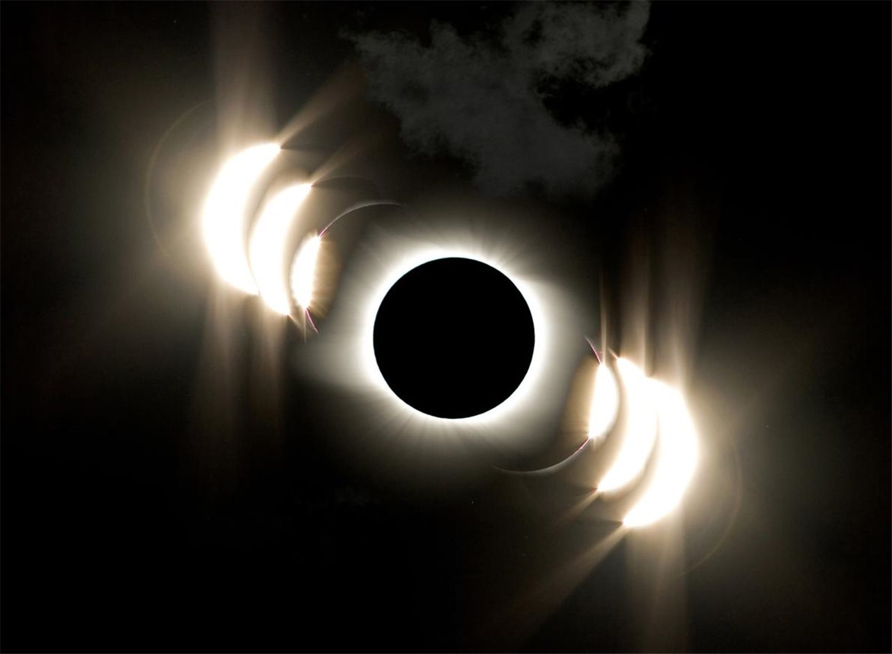
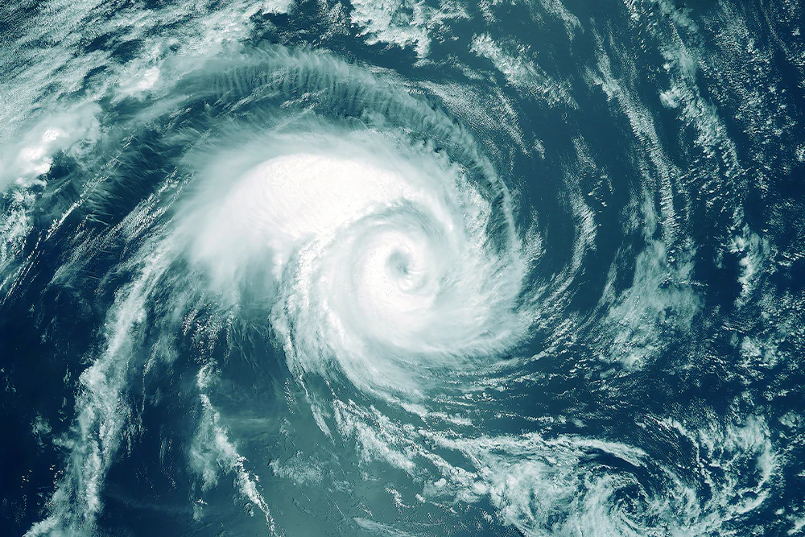

ECLIPSE
Un fenómeno astronómico que se produce cuando un cuerpo celeste, como la Luna o un planeta, se interpone en la trayectoria de la luz de otro cuerpo celeste, proyectando una sombra sobre él.
LEY

La Ley de Restauración de la Naturaleza de la Unión Europea (UE) fue finalmente aprobada el 17 de junio de este 2024 en el Consejo de Europa tras varios meses de bloqueo. Ello supone el paso final de una de las iniciativas más controvertidas del Pacto Verde Europeo.
¿Por qué la temporada de huracanes de 2024 podría ser especialmente activa?
Las temperaturas cálidas récord de los océanos y un posible fenómeno de La Niña podrían crear una "tormenta perfecta" de condiciones necesarias para que se produzcan huracanes de gran intensidad, explican los expertos.